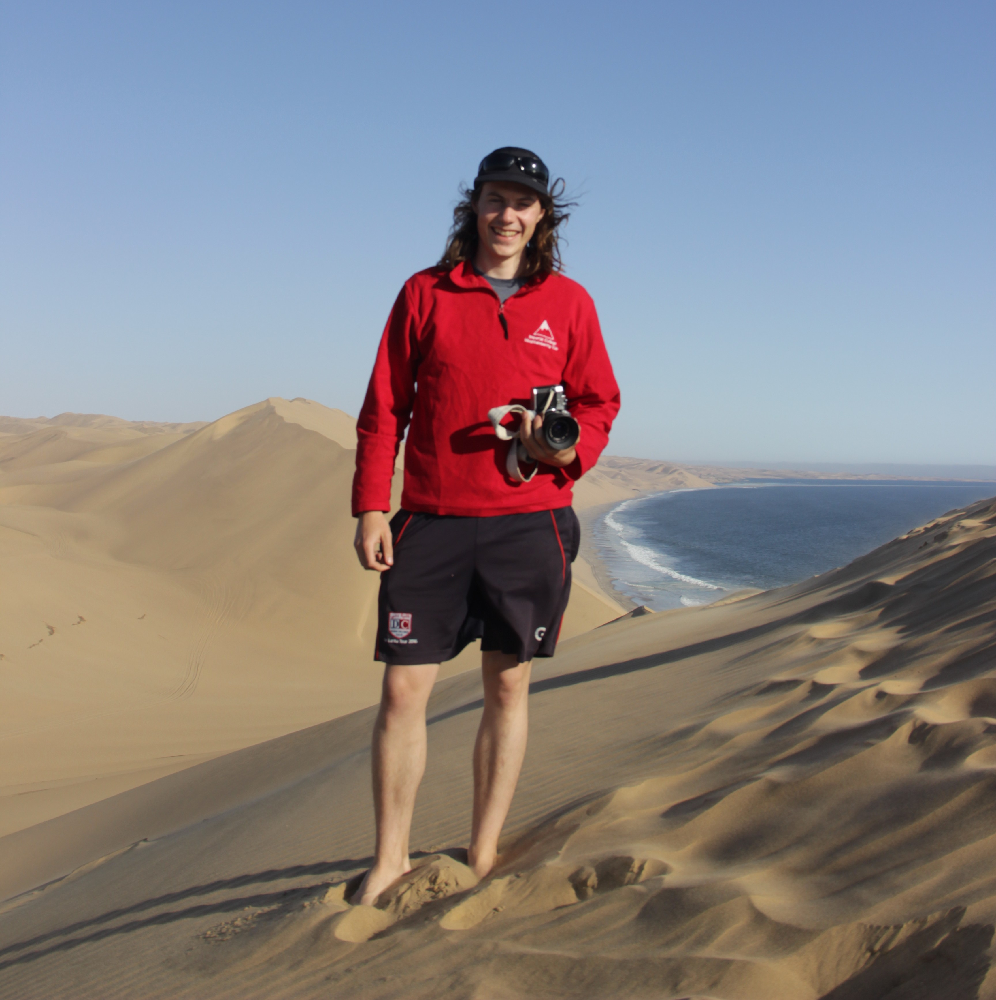
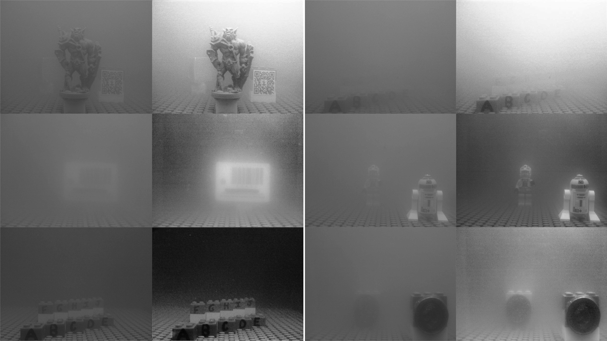
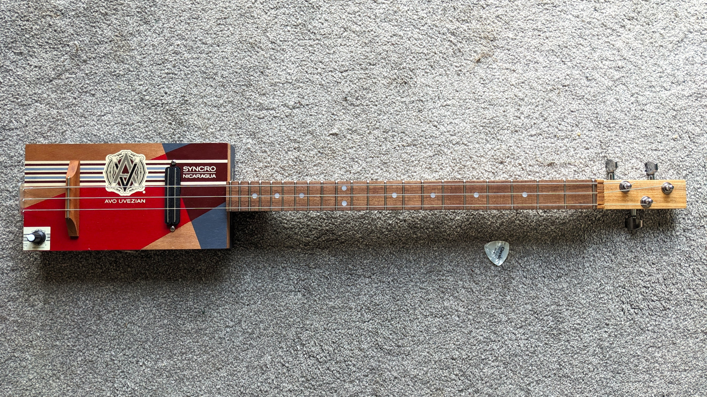

Hi! I'm George
I'm a multi-disciplinary engineer spanning AI/ML, mechanical and systems engineering.
I'm currently working on sensing and perception technologies, adding insight with AI & ML and
building systems that thrive in harsh environments for ambitious clients at TTP.
When I'm not at work I can usually be found in the outdoors.
I like to climb mountains, take photos, and have recently learned to dive.

Selected Projects

ML for Real-time Underwater Video Dehazing
I developed a scalable ML method to dehaze underwater video in real time. It leverages information from the polarisation state of the incident light to improve reconstruction.
View project.jpg)
Handheld Drone Detector with Edge ML
I developed and trained a lightweight CNN to detect the presence of a UAV C2 link. It was designed for and tested on low cost RF hardware.
View project

Anomaly Detection model for Novel Antarctic Species Discovery
I used a patchcore model to highlight anomalies in seabed imagery from the Weddel sea. The aim was to accelerate the discovery of new species within a 30,000 image backlog.
View project
Cigar Box Guitar
A woodworking project, completed in evenings & weekends. It sounds good, and more importantly looks good on my wall.
View project
.jpg)